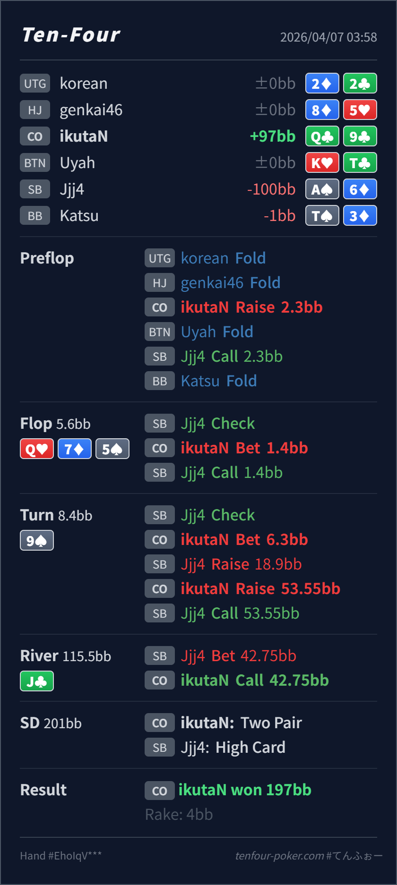

Preflop
良いQ♣9♣ は CO open の十分自然な一枚です。
主論点は、turn で Q9 が top two に改善したあと、SB の x/r に対して call で bluff を残すか、3bet で stack を入れ切るかです。当時の思考メモはないので、「top two まで行ったので守りながらすぐ積みたくなる」という仮定で見ます。結論は、preflop open、flop c-bet、river call は自然で、再レビューの焦点は turn の 3bet です。
Q♣9♣A♠6♦Q♥ 7♦ 5♠ / 9♠ / J♣turn x/r に対する 3bet で、Q9 は十分強い一方、default は call 寄りで SB の bluff / worse value を残す方が全体として崩れにくいです。Q♣9♣A♠6♦2.3BB, SB callQ♥ 7♦ 5♠ / 9♠ / J♣1.4BB, SB call6.3BB, SB raise 18.9BB, CO raise 53.55BB, SB call42.75BB, CO call
良いQ♣9♣ は CO open の十分自然な一枚です。
Q♥ 7♦ 5♠良い
Hero は top pair で、board もそこまで重くありません。small c-bet で広く続行させるのが自然です。
9♠許容だがやや前のめり
Hero は top two に改善してかなり強いですが、SB の x/r はすでに strong line です。continue は必須でも、raise で押し返すと bluff を落としやすいです。
J♣良い
Hero の Q9 は nuts ではありませんが、turn で pot を大きくした以上かなり上位の bluff-catcher です。
| 論点 | その場で起きがちな見え方 | どこがズレたか | 次回の基準 |
|---|---|---|---|
turn の Q♣9♣ | top two まで育ったので、straight や draw に無料カードを見せずすぐ 3bet したくなる | SB の turn x/r は strong ですが、86, set, two pair だけでなく spade系や gutter系 bluff も混ざりえます。ここで 3bet すると、そうした bluff や thin value を落として強い value 側に寄せやすいです。 | 強いから積む の前に raise すると誰が降りるか を先に数える |
| river の call | turn で大きく入れたあとに shove を受けると、value に寄って見えて怖くなる | J♣ は T8 を完成させる一方、miss した spade や A6/A8 系 bluff も残ります。しかも 42.75BB を払って最終 pot 201BB を取りにいくので、必要勝率はかなり低いです。 | pot odds が良い river では、何に負けるか だけでなく 何が miss しているか も必ず確認する |
| 実ハンド結果の扱い | 今回 bluff だったので、次回から top two は自動で turn 3bet したくなる | 実ハンドはあくまで 1 サンプルです。今回の A-high を見て 毎回3bet に寄せると、set / straight 側にぶつかった時に苦しくなります。 | 結果 ではなく 相手 range をどれだけ残せるか で line を決める |
| ストリート | その時点の見え方 | 判断の軸 | 評価 | コメント |
|---|---|---|---|---|
| Preflop | SB defend には broadway、suited hand、低め pocket、suited connector が広く残ります。 | Q♣9♣ は CO open の十分自然な一枚です。 | 良い | 2.3BB open で問題ありません。 |
Flop Q♥ 7♦ 5♠ | SB の check-call range には Qx, 7x, 5x, 86, backdoor 付き air が残ります。 | Hero は top pair で、board もそこまで重くありません。small c-bet で広く続行させるのが自然です。 | 良い | 1.4BB は素直です。check back に寄せる必要は薄いです。 |
Turn 9♠ | flop call 後の SB には Qx, 97s, 75s, 55/77, 86, 2spade化した draw が残ります。 | Hero は top two に改善してかなり強いですが、SB の x/r はすでに strong line です。continue は必須でも、raise で押し返すと bluff を落としやすいです。 | 許容だがやや前のめり | 6.3BB barrel は良いです。対 x/r は default なら call 寄り、draw 過多 read があれば 3bet も成立します。 |
River J♣ | turn 3bet-call 後の SB には 86, set, 一部 T8, miss spade, A6/A8 系 bluff が残ります。 | Hero の Q9 は nuts ではありませんが、turn で pot を大きくした以上かなり上位の bluff-catcher です。 | 良い | 42.75BB は pot に対して安く、call が自然です。 |
x/r に対しては まず call で何を残せるか を見ると line が整いやすいです。保護 より worse value / bluff を消しすぎないか を先に確認するとぶれにくいです。x/r はやや value-heavy に寄りやすいので、baseline は call の方が扱いやすいです。